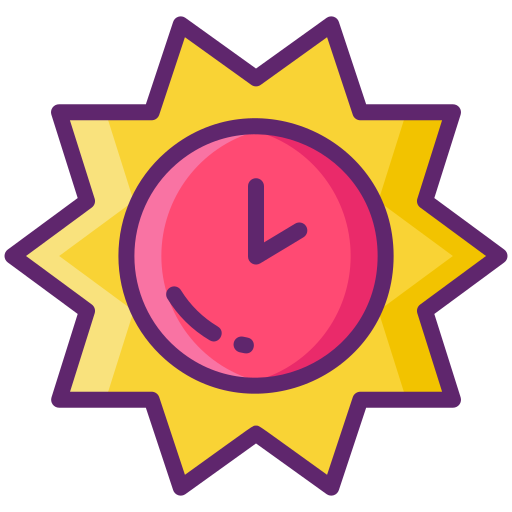
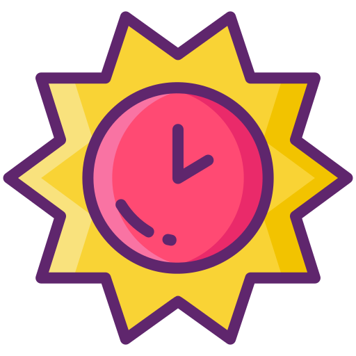

Insira os seguintes dados para cálculo:
Vencimento base:
Serviço de prevenção semanal (25€/dia com Subsídio Alimentação incluído):
Serviço de prevenção Fim-De-Semana (20€/dia):
Pernoitas (40€ com Subsídio Alimentação incluído):
Dia de trabalho fim-de-semana (50€/dia):
Subsídio de refeição (5€/dia):
Modo tons brancos ou Modo escuro?

 
